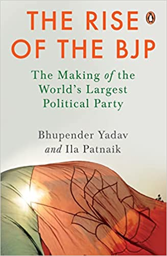

The Rise of the BJP
The Rise of the BJP: The Making of the World's Largest Political Party by Bhupender Yadav and Ila Patnaik, Penguin Viking, January 2022.

The Bharatiya Janata Party is an idea that was seeded into the minds of nationalist Jana Sangh leaders when they began to envision India after Independence. Much like the very core the freedom struggle was built on, they saw India as a demographically, culturally and historically cohesive and unified nation - as Bharat.
In this book, senior BJP leader and cabinet minister Bhupender Yadav and leading economist Ila Patnaik come together to trace the BJP's journey from its humble roots, through ups and downs and to eventually getting 303 seats in Lok Sabha in 2019 and becoming the world's largest political party. While focusing on the larger economics and political story, the book encapsulates many smaller, yet hugely significant stories of individuals and incidents, which brought the BJP to where it stands now.
For the first time ever, The Rise of the BJP, tells us the inside story of how one of the most powerful political parties makes decisions, implements ideas and executes policy. Meticulously researched and immensely readable, the book shows us how the BJP fought competing ideologies, political assaults and catapulted to the centre stage of national politics.
- Akhilesh Singh & Sidhartha K in The Times of India, 20 February 2022.
- Raj Chengappa in India Today, 18 February 2022.
- Rahul Verma in India Today, 18 February 2022.
- Josh Felman in The Leap Blog, 11 February 2022.
- Podcast in The Times of India, 10 February 2022.
- Live with Harendra Singh Jodha, Thames Speaks , 10 February 2022.
- Excerpt: RSS Made It Clear It Would Not Play Second Fiddle To Any Party NDTV , 9 February 2022.
- Jai Shiven in Sahitya Tak , 8 February 2022.
- Excerpt: Mapping the ascendance of the BJP Penguin Random House India , 7 February 2022.
- Sriram Karri in Deccan Chronicle , 6 February 2022.
- Neel Rajput in Jagran News , 6 February 2022.
- Book Review in Prabhat Khabar , 30 January 2022.
- Interview with Saurabh Dwivedi, Kitabwala , 21 January 2022.
- Brij Bihari Choubey in Jagran News, 21 January 2022.
- Ajay Shah in The Leap Blog, 20 January 2022.
- Liz Mathew in The Indian Express, 19 January 2022.
- Smriti Kak Ramachandran in The Hindustan Times, 17 January 2022.
- Vasudha Venugopal & Kumar Anshuman, ET Bureau in The Economics Times, 17 January 2022.
- Coomi Kapoor in The Indian Express, 16 January 2022.
- The Rise Of The BJP - The Cover Story with Priya Sahgal, NewsX , 16 January 2022.
- Rakesh Ranjan Kumar in News18 Hindi, 15 January 2022.
- Interview by Nistula Hebbar in The Hindu, 15 January 2022.
- News Epicentre conversation with Marya Shakil, CNN News18 , 15 January 2022.
- Off The Cuf with Shekhar Gupta, The Print , 12 January 2022.
- The Newshour Debate with Navika Kumar, Times Now , 11 January 2022.